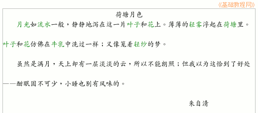
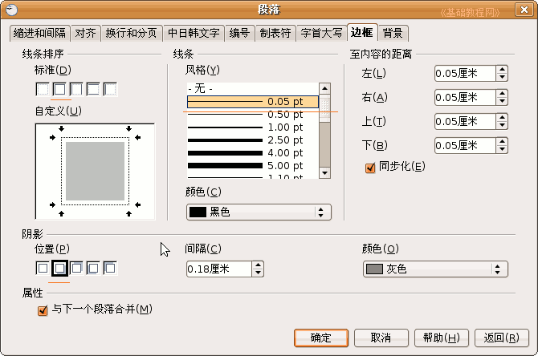
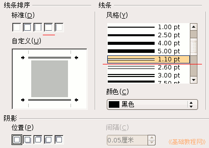
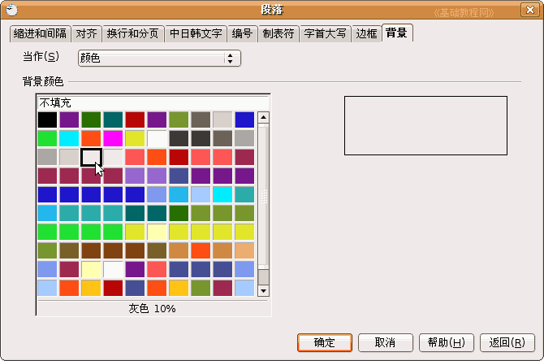
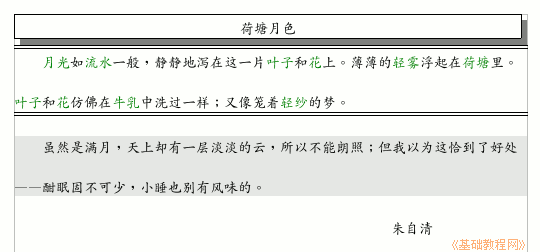

OpenOffice.org 教程之 Writer 文字处理
作者：TeliuTe 来源：基础教程网
五、边框和背景 返回目录 下一课为了更好地修饰文章，我们还可以给文字添加边框和底纹，从而使得版面划分比较清晰，下面我们来看一个练习；
1、输入文字
1）启动Writer，自动打开一个空白文档；
2）点菜单“文件－打开”命令，找到自己的文件夹，打开上次保存的“段落标尺”；
3）在正文第一段末尾句号后面，按一下回车键，这样就开始新的一段，接下来输入文字：
虽然是满月，天上却有一层淡淡的云，所以不能朗照；但我以为这恰到了好处——酣眠固不可少，小睡也别有风味的。

2、设置边框
1）选中标题“荷塘月色”文字部分，点菜单“格式－段落”，在出来的对话框上边点“边框”标签；

在左边的“线条排序”里选第二个“采用全部边框”，在旁边的线条中选第一个0.05pt，
在下面的“阴影”里选第二个“阴影投向右下”，单击确定完成设置；
2）再选中正文第一段，点击菜单“格式－段落－边框”，
在左边的“线条排序”里选第四个“仅采用上下边框”，在旁边的线条中选第一个1.10pt双线，阴影不用选，点“确定”完成；

3）再选中正文第二段，点击菜单“格式－段落”，找到右边的“背景”标签，
在出来的对话框中，在左边颜色面板里选择“灰色10%”，看一下左边的预览效果，点“确定”完成；

这样文章的效果就设置好了，点菜单“文件－另存为”，以“边框和背景”为文件名，保存文件到自己的文件夹；

本节学习了边框和背景的基本操作，如果你成功地完成了练习，请继续学习下一课内容；
返回目录 下一课本教程由86团学校TeliuTe制作|著作权所有，不得用于商业用途
基础教程网：http://teliute.org
美丽的校园……
转载和引用本站内容，请保留版权信息和本站链接。